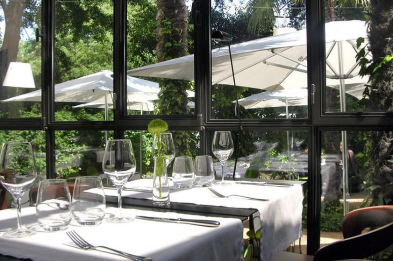
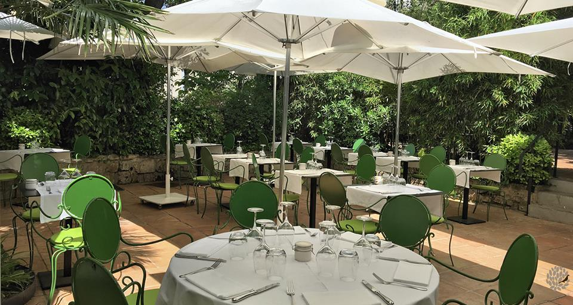

Restaurant gastronomique Le Petit Jardin
 L'espace restaurant
L'espace restaurant
La salle
Un institution montpelliéraine…
Derrière une grande verrière, s’ouvrant sur le jardin, un espace lumineux, intemporel et chaleureux.
Le jardin
Un endroit hors du temps...
Un petit côté magique...
Un écrin de verdure, une sérénité ambiante, deux terrasses, pour passer un bon moment à l’ombre d’arbres centenaires ou à la lueur du clocher de la cathédrale.
